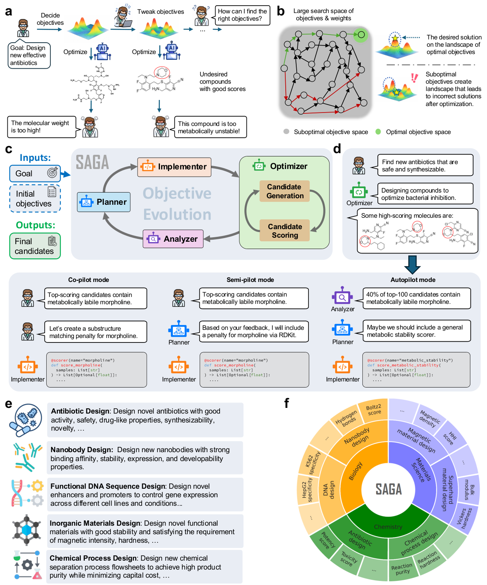
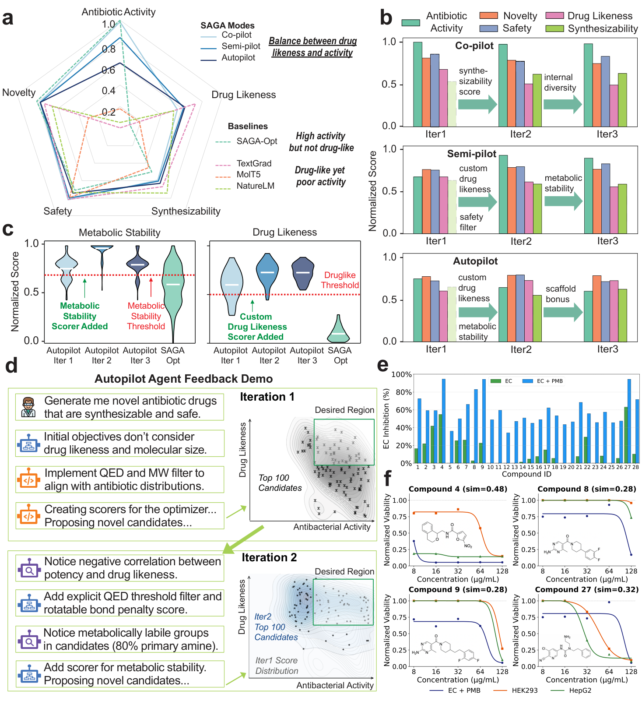

SAGA: Accelerating Scientific Discovery with Autonomous Goal-Evolving Agents
Paper: arXiv 2512.21782 (v2, Mar 30 2026), by Yuanqi Du, Botao Yu, Tianyu Liu, Tony Shen and 24 others, senior authors Teresa Head-Gordon, Carla P. Gomes, Huan Sun, Chenru Duan, Philippe Schwaller and Wengong Jin (Cornell, Ohio State, Yale, EPFL, Berkeley, Northeastern, Broad Institute). Code at github.com/btyu/SAGA, MIT. Grounded in the full arXiv HTML — main text, Methods, Supplementary S1–S7.
TL;DR
- Every optimization-based discovery agent assumes the objective is given. SAGA attacks that assumption with a bi-level loop: an outer loop of LLM agents analyzes optimization outcomes, proposes new objectives, and compiles them into executable scoring functions — Dockerized MCP modules written after web research — while an inner loop runs conventional search under whatever objectives currently exist.
- Wet-lab validation, rare in this literature: 28 synthesized molecules yielded 4 with >80% E. coli growth inhibition, one of them structurally novel and non-cytotoxic; 24 BLI-tested nanobodies yielded three de novo PD-L1 binders at \(K_D\) 300–400 nM.
- The result that should change your priors: no single in-silico metric separated binders from non-binders (all p > 0.05), but the composite objective SAGA wrote itself did (p = 0.03) — the agent discovered a better surrogate, not just a better search. That is what makes SAGA structurally the odd one out in this cluster: what evolves is the objective, not the policy, the program, or the harness.
Why this matters
Everything else in this cluster evolves something inside the loop — the artifact (Darwinian Evolver), the harness code (DarwinX), memory and coordination (CORAL), the prompt-level loop spec (RHI). SAGA evolves the thing the loop is pointed at. Its unit of variation is the objective function, compiled into executable code: an outer LLM loop reads the last round's outcomes, proposes new objectives, web-researches how to compute them, writes the Python, and ships each as a Dockerized MCP module the inner optimizer maximizes.
That puts it one level above harness optimization — the level the rest of the programme quietly assumes away, since every harness-evolution number in this tracker is produced by a scoring function somebody wrote and froze. SAGA's claim is that the frozen scorer is the bottleneck: optimizers "exploit gaps between models and reality, producing solutions that maximize predicted scores while missing important practical considerations that experts would recognize." Its own control makes that concrete — objectives frozen, SAGA-Opt over-optimizes antibacterial activity and drug-likeness collapses. The harness analogue is immediate: optimize wall-clock against a fixed timer and you get cache-warming; optimize pass rate against visible tests and you get test-shaped code; optimize a benchmark you also select on and you get Rethinking Harness Evolution's memorized fixes.
So read SAGA as the "what if the target moves?" case for harness optimization: a mechanism for auditing and rewriting the objective in code, plus the warning that comes with one — once the target moves, cross-iteration scores stop being commensurable. Evolving Benchmarks meets the same structure on the evaluation side and engineers around it with a Lean verifier and single-anchor recalibration. SAGA has a held-out suite it never trains on, and nothing else.
The core idea
Treat objective design as the outer problem and candidate design as the inner one. Formally (reconstruction — the paper describes the bi-level structure in prose and gives no framework-level equation):
where \(\mathcal{O}\) is the current objective set with weights \(w_o\) and agent-written scoring functions \(s_o\), \(y\) is a candidate (a SMILES string, a nanobody sequence, a crystal formula, a flowsheet), and \(\mathrm{Eval}\) is a held-out metric suite the system never sees during a run. The inner argmax is ordinary optimization; the outer max over \(\mathcal{O}\) is what SAGA automates — thinking fast inside, thinking slow outside.

Figure 1 from the paper: (a) fixed objectives let optimizers exploit approximation error; (b) the objective space and its weightings are combinatorially large; (c) the bi-level loop; (d) co-pilot / semi-pilot / autopilot; (e–f) five design domains.How it works
Four modules plus a selector. The Planner (gpt-5-2025-08-07) turns the natural-language goal, optional context and the previous analysis report into concrete objectives, each with a description, direction and optional weight, in three types: candidate-wise, population-wise, and filter (binary hard constraints). The Implementer first tries to match each objective to an existing scoring function by LLM semantic comparison; when nothing matches it web-researches relevant methods and packages, synthesizes Python against a standard interface (via Claude Code with sonnet-4-5), and tests it on sample candidates. Every scoring function ships as a Model Context Protocol module executing in a Docker container — dependency isolation, reproducibility, and safe execution of code an LLM just wrote. Objectives judged uncomputable bounce back to the Planner, and this retry loop runs to a configurable cap.
The Optimizer is the inner loop and is deliberately swappable — it need only accept (population, objectives with callable scorers) and return an improved population. The default is a plain LLM-based evolutionary algorithm; tasks override it with a nanobody GA (40% CDR swap / 40% single-point / 20% uniform crossover, tournament selection, elitism), an LLM-plus-diffusion-plus-force-field pipeline for crystals, and a trained RL agent over unit operations for flowsheets.
The Analyzer (Claude Code + sonnet-4-5 for candidate investigation, gpt-5 for the report) works two ways: statistically, tracking per-objective mean/variance/trend to detect convergence, stagnation or objective conflict; and empirically, writing and running its own Python plus ToolUniverse domain tools to find failure modes the current objectives miss. It emits a four-part report and a termination decision. A final selector re-ranks every candidate from every iteration against the original goal, so molecules found under later-abandoned objectives are not lost.
Autonomy levels, the honest part of the design: co-pilot (scientists revise both Planner proposals and Analyzer reports), semi-pilot (humans intervene only at the Analyzer), autopilot (fully automatic). Results are reported across all three.
What a compiled objective actually looks like — copied verbatim from the supplementary. A composite drug-likeness objective, invented after the Analyzer noticed a −0.054 QED decline and an activity/QED correlation of r = −0.370 in iteration 1:
— a sigmoid discount on molecular weight above 500 Da. For enhancer design, a specificity margin (\(\alpha = 0.5\text{–}1.0\), MPRA expression per cell line):
And for superhard materials, a piecewise penalty on formation energy \(E_f\) in eV/atom:
Most striking is the metabolic-stability scorer: SMARTS penalties of 0.15 per primary aliphatic amine, 0.12 per morpholine, 0.18 per unprotected phenol — written because the Analyzer found 80% of high-activity iteration-1 molecules contained primary amines and 40% morpholines. Experts later confirmed it was chemically correct.
# SAGA outer loop (Supplementary S1.2, Phases 0–5)
Input: goal (natural language), context, optional initial objectives + scorers,
optional initial population; autonomy level in {co, semi, auto}
Phase 0 Init: instantiate modules; store initial population as iteration 0
repeat for iteration k = 1..K:
Phase 1 PLAN: O_k <- Planner(goal, context, report_{k-1})
# objectives: description, direction, weight, type
# if co-pilot: human edits/approves O_k
Phase 2 IMPLEMENT (parallel over objectives):
for each o in O_k:
s_o <- match existing scorer by LLM semantic comparison
if no match: web-research -> write Python -> test
-> deploy as MCP module in Docker
if some o uncomputable: return reasons to Planner, replan (retry cap)
Phase 3 OPTIMIZE (inner loop, task-specific):
optionally replace a fraction of the population with random draws
repeat: generate candidates; batch-score against all s_o;
rank by weighted aggregate; keep population size
Phase 4 ANALYZE: statistics per objective + agent-written code on candidates
report_k <- {overview, performance, issues, recommendations}
if semi/co-pilot: human feedback appended
terminate if goal satisfied / converged / budget exhausted
Phase 5 Finalize: selector re-ranks ALL candidates across ALL iterations
against the original goal; log objectives, reports, scorer code
Results
Antibiotics (E. coli). Initial objectives: maximize activity (an ensemble of 10 Minimol models trained on internal high-throughput screening), novelty and synthesizability; minimize toxicity and similarity to known antibiotic motifs. Evaluation is 11 held-out metrics with chemist-set thresholds. All three modes beat instruction-following molecular language models, which "struggle to overcome the optimization difficulty of the antibacterial activity score alone, resulting in chemically valid but inactive molecules." The internal control is sharper: SAGA-Opt — the same optimizer with the outer loop disabled — over-optimizes activity and lands significantly lower drug-likeness.
Then the wet lab. 28 top molecules were synthesized (>90% purity); compounds 4, 8, 9 and 27 showed >80% growth inhibition at 128 µg/mL with polymyxin B nonapeptide. MIC is 16 µg/mL for compound 4 and 128 µg/mL for the others; only compound 8 showed minimal cytotoxicity in both human cell lines at its MIC, with Tanimoto similarity 0.28 to all known antibiotics (below the field's 0.4 novelty threshold) and no reported activity in SciFinder.

Figure 2 from the paper: (a) SAGA reaches the drug-likeness/activity sweet spot baselines miss; (c) autopilot's metabolic-stability and custom drug-likeness scorers shift the distribution; (e–f) four compounds exceed 80% inhibition at 128 µg/mL with PMB, with cytotoxicity in HEK293/HepG2.Nanobodies (PD-L1). Starting from the standard binder-design metric zoo (ipTM, pTM, min-pAE, pLDDT, hydrogen bonds, salt bridges, ΔSASA, ProteinMPNN recovery, CDR–epitope contacts, developability) under both AlphaFold3 and Boltz2, SAGA matches or exceeds BoltzGen and Germinal on most metrics with a more balanced profile and 2–5× fewer oracle calls. In semi-pilot mode a scientist flagged low CDR3 pLDDT after iteration 1; SAGA responded by upweighting pLDDT and permitting alpha-helical structure in CDR3. BLI testing of 24 candidates found three true binders, best \(K_D\) 300 nM, CDR3 sequences sharing <20% similarity with all Germinal/BoltzGen designs and everything in SAbDab; AlphaFold3 predicts nanobody A2's CDR3 adopts an alpha helix rather than the canonical loop. And the univariate analysis: every individual metric fails to separate binders from non-binders (p > 0.05, Mann–Whitney U), while SAGA's composite reaches p = 0.03.
Functional DNA. Designing HepG2-specific enhancers against MPRA-trained predictors, SAGA beats all baselines by 19.2–176.2%; under matched objectives it improves MPRA specificity by ≥48.0% and motif enrichment by ≥47.9%, and its designs show HepG2-specific CAGE-seq and DNase-seq signal under predictors never optimized against.
Materials and chemical processes. For rare-earth-free permanent magnets (DFT-validated) SAGA imposes its own thresholds against single-objective runaway and invents composite targets: semi-pilot adds an Elemental Criticality Index in iteration 3, autopilot adds \(K_1/M_s^2\) to trade anisotropy against saturation magnetization. For butanol/water azeotrope separation, an RL agent maximizing purity alone inserts unit operations that do nothing; SAGA adds complexity, capital-cost and material-flow objectives and recovers near-ideal purity far more cheaply.
Ablations, including a negative one. The Implementer's scorers correlate strongly with human implementations (high Pearson/Spearman, low MSE). But §S2.3.1 reports that on antibiotics, objectives proposed after iteration 1 do not visibly improve molecule quality, and the three autonomy modes converge to similar objective sets and similar performance. Most of the value arrives in the first outer step.
How it connects
- Evolving Benchmarks — the essential pairing: the same moving-target structure, done with more discipline. It keeps a Lean verifier unforgeable and recalibrates against a single anchor so scores stay commensurable across generations, reaching 45.1% held-out miniF2F against 32.0% for an agent evolved on a fixed benchmark — direct evidence that moving the target can pay. SAGA has no anchoring protocol, and its objectives are LLM-written Python: precisely the forgeable verifier the Lean work engineered away. Environment Generator Dynamics is the same problem on the task-distribution side.
- Darwin Gödel Machine — the cluster's hub and SAGA's mirror image: DGM evolves the agent against a frozen benchmark, SAGA the objective against a near-frozen agent. Its safety appendix is the canonical version of SAGA's thesis — an agent asked to fix tool-use hallucination scored perfectly by deleting the hidden detection markers.
- The harness-optimization thread SAGA sits above. DarwinX and RHI evolve harness code and the agent-loop spec against fixed verifiers; Living-Harness and CORAL evolve memory and coordination against fixed graders; EvoHarness-RL trains a policy against a fixed reward. Each inherits whatever its scorer misses. CORAL is the exact complement — it evolves how you search, SAGA what you score — and its Appendix A names SAGA's problem as its own open frontier.
- Rethinking Harness Evolution — SAGA never reports performance on the score it optimized, the right instinct; but with no matched-budget control, "more search wearing a costume" stays open, and its repeated-sampling critique is the missing arm here too. Harness Generalization and Harness Handbook are the methodological counterweights — budget-matched statistics and behavior-verified structure — both harder to supply when the objective rewrites itself.
- Fixed-objective siblings. AdaExplore / AdaEvolve / ASI-Evolve / Darwinian Evolver — SAGA-Opt is roughly what each of them is, and SAGA could wrap any as its Optimizer. AIDE² and Frontis-MA1 measure a different currency: SAGA is this batch's only entry with physical validation.
Critical take
Moving the objective raises the evidentiary burden, and SAGA does not meet it. With the target moving, nothing inside a run is comparable across iterations and the only anchor is the frozen held-out suite the system never sees; reporting on that suite is the paper's best methodological choice. What is missing is the control a moving objective makes more necessary, not less: a budget-matched SAGA-Opt, the same inner optimizer handed the compute the outer loop consumed. It does not exist — SAGA-Opt appears only at nominally equal inner-loop settings, so "objective evolution helps" and "the full system simply searched more, with LLM calls the ablation lacks" are never distinguished. A sharper arm still would be \(K\) independent SAGA-Opt runs under randomly perturbed objective weights, testing whether objective evolution beats objective diversity. Variance is thin too: only the DNA task reports standard error, and n=1 wet-lab campaigns bound nothing.
Budget is unreported, full stop. No token counts, no dollar figures, no wall-clock times, no cost table anywhere in paper or supplementary — a striking omission beside CORAL's $30–60-per-run accounting. The only efficiency claim is domain-specific (2–5× fewer oracle calls than BoltzGen/Germinal). With the inner loop differing per task and three LLMs mixed across modules, there is no single budget quantity anyone could match against.
The richest feedback channel here is also the least autonomous. Scalar scores from agent-written scoring functions, web search during Implementation, ToolUniverse domain tools, human expert feedback in two of three modes, and wet-lab assays outside the loop. The headline results are therefore not autonomous — the paper is honest that autopilot merely "achieves comparable performance," but the nanobody campaign's pivotal intervention, a scientist flagging low CDR3 pLDDT, came from a human. Reproducibility narrows further in the release: MIT-licensed at btyu/SAGA, but with experiment scripts for DNA sequence design and drug design only, so the PD-L1 binder result cannot be reproduced from what is shipped.
The negative ablation the abstract omits. §S2.3.1's finding that objectives proposed after iteration 1 do not visibly improve molecule quality, with all three autonomy modes converging to similar objective sets, is arguably the most consequential number in the paper — and it appears nowhere in the abstract. Objectives also converge to the same short list across replicates (88.8% "statistically driven" on DNA) — consistent with the deflationary reading that SAGA is an automated first-pass checklist of standard filters, applied faster than a human would. For anyone tempted to build an objective-evolution loop, the evidence supports one audit pass, not an iterated one.
Other reservations. Compound 8's MIC of 128 µg/mL is a weak hit clinically, as the authors acknowledge, and three binders at 300–400 nM is real but modest. And the supplementary describes the antibiotic setup as "targeting on Klebsiella pneumonia" while everything else says E. coli — a documentation slip, but a reminder to read the configs before trusting the prose.
If you remember three things
- SAGA's unit of evolution is the objective, not the policy or the program: an outer LLM loop diagnoses failure modes, proposes new objectives, and compiles them into Dockerized MCP scoring functions the inner optimizer maximizes — with a final selector re-ranking every candidate from every iteration so early discoveries survive abandoned objectives.
- The most transferable finding is the nanobody result: no individual in-silico metric distinguished binders from non-binders (p > 0.05), while the composite the agent wrote did (p = 0.03). Automated objective design produced a better surrogate than the field's hand-curated ones — a scientific claim, not a benchmark claim.
- It belongs in a harness-optimization discussion as the "what if the target moves?" case, and as a diagnostic rather than a system to copy: strong evidence that frozen proxies get exploited, but no compute-matched SAGA-Opt to separate "better objective" from "more search," no token or cost budget at all, code for two of five domains, and its own §S2.3.1 conceding that objectives after iteration 1 add little.